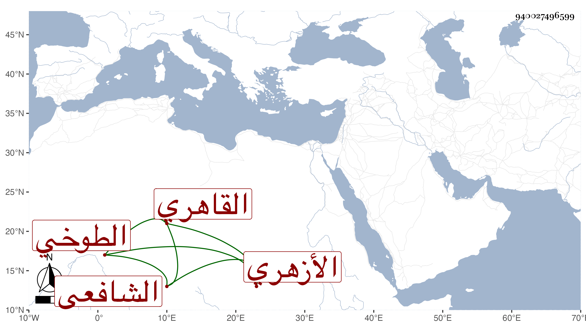

0902Sakhawi.DawLamic.ITO20230111-ara1.EIS1600.940027496599
Biography ID: 940027496599
1204
يوسف بن عبد الحميد بن عمر بن يوسف بن عبد الله الطوخي الأصل القاهري الأزهري الشافعي والد يحيى وأحمد المذكورين وأبوه ويعرف بابن عبد الحميد . حفظ القرآن وجوده والمنهاج واشتغل عند خلد المنوفي وغيره ، وحج غير مرة وجاور وأقرأ الأبناء وقتا وهو أحد المنزلين في تربة الأشرف قايتباي .
